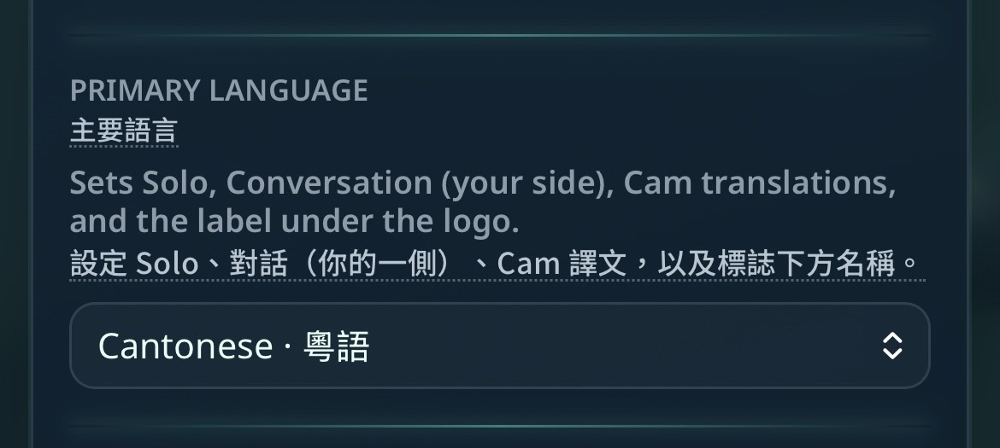
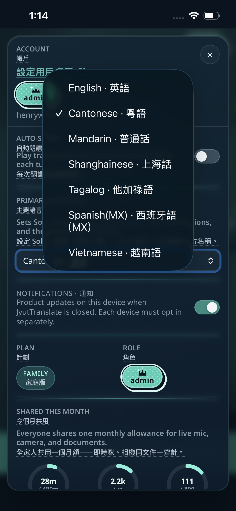

New · Account Hub
Pick your Primary Language once.
Sets Solo, Conversation (your side), Cam, and the label under the logo — in your language.
Account → Primary Language
English
Cantonese · 粵語
Mandarin · 普通話
Shanghainese · 上海話
Tagalog
Spanish (MX)
Vietnamese


JyutTranslate
jyuttranslate.com
Try it free